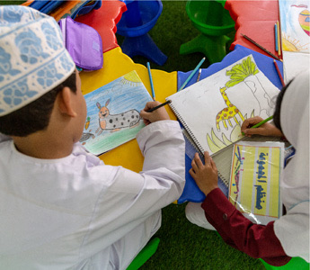
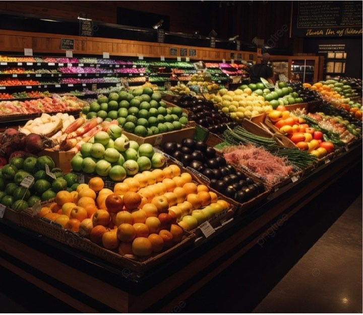
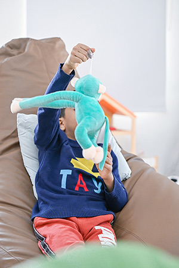

جمعية بهجة العمانية للأيتام
عطاؤك يصنع بهجةً في بيوت الأيتام
زكاة، صدقة، كفارة، أو مشروع موسمي — اختر طريقة عطائك وأكمل تبرعك عبر الصفحات الرسمية للجمعية.
- تأسست ١٠ فبراير ٢٠١٤
- مسجّلة وفق المرسوم السلطاني رقم ١٤/٢٠٠٠
- الدفع بالبطاقة عبر SmartPay من بنك مسقط

كيف تحب أن تعطي؟
اختر نوع العطاء، وسننقلك مباشرةً إلى الصفحة الرسمية المخصّصة له.
الزكاة
زكاة مالك، للأيتام المسجلين لدى بهجة
تتيح جمعية بهجة العمانية للأيتام إخراج زكاة المال لصالح الأيتام المسجلين لديها، من خلال صفحة الزكاة الرسمية على موقع الجمعية.
لحساب مقدار الزكاة، استخدم أدوات الجمعية الرسمية: يدعم تطبيق بهجة حساب الزكاة بحسب الملف التعريفي للجمعية، كما تتوفر حاسبة الزكاة على موقع الجمعية. للاستفسارات الشرعية التفصيلية يُرجى الرجوع إلى جهات الإفتاء المختصة.
أخرج زكاتك الآنمشروع موسمي
السلة الرمضانية
مشروع سنوي تقدّم فيه الجمعية سلة غذائية لأسر الأيتام المسجلة لديها، توزَّع مرة واحدة في شهر رمضان المبارك على أسر الأيتام في مختلف ولايات المحافظة، وتكفي معظم أيام الشهر.
بحسب الملف التعريفي الرسمي للجمعية

الكفارات
أدِّ كفارتك عبر بهجة
المبالغ المعتمدة من الجمعية لكل نوع كفارة:
- ١٥ ر.ع كفارة يمين إطعام عشرة مساكين
- ١٫٥ ر.ع عن يوم صيام واحد
- ٤٥ ر.ع عن شهر رمضان كاملًا
صدقة ومشاريع أخرى
صدقتك، في المشروع الذي تختاره
تبرّع صدقةً عامة تصرفها الجمعية حيث الحاجة، أو اختر أحد مشاريعها القائمة.
-

كفالة الأيتاماكفل يتيمًا -
فك كربةتبرّع
-
بناء وترميمتبرّع
جمعية رسمية، وعطاء موثوق
- التأسيس
- ١٠ فبراير ٢٠١٤
- السند النظامي
- المرسوم السلطاني رقم ١٤/٢٠٠٠
- الإشراف
- تعمل تحت مظلة وزارة التنمية الاجتماعية
- نطاق الخدمة
- تخدم الأيتام والأرامل في ولايات محافظة ظفار
مبادرات الجمعية مدرجة أيضًا على منصة جود التابعة لوزارة التنمية الاجتماعية.
ثلاث طرق للتبرع
-
عبر الموقع الرسمي
اختر المشروع وادفع بالبطاقة الائتمانية أو بطاقة الخصم عبر SmartPay من بنك مسقط.
صفحة التبرعات -
عبر تطبيق بهجة
تبرّع، واطّلع على مشاريع الجمعية، واحسب زكاتك من خلال التطبيق الرسمي.
-
تحويل بنكي
بعد الإيداع، يُرجى إشعار الجمعية بالتحويل. تم التحقق من الحسابات بتاريخ .
صفحة التواصلتتوفر حسابات بنكية رسمية للجمعية. لضمان وصول تبرعك، تأكد من أرقام الحسابات الحالية من صفحة التواصل الرسمية أو بالاتصال بالجمعية، ثم أشعرها بعد الإيداع.
أسئلة شائعة
كيف أُخرج زكاتي عبر بهجة؟
من خلال صفحة الزكاة الرسمية، حيث تُخرج زكاة مالك لصالح الأيتام المسجلين لدى الجمعية. ويمكنك حساب زكاتك عبر تطبيق بهجة.
كم مبلغ السلة الرمضانية؟
٣٥ ر.ع للأسرة المسجلة الواحدة، بحسب الملف التعريفي الرسمي للجمعية. وهي مشروع سنوي يغطي معظم أيام شهر رمضان.
ما مبالغ الكفارات؟
كفارة اليمين ١٥ ر.ع (إطعام عشرة مساكين)، وعن يوم صيام واحد ١٫٥ ر.ع، وعن شهر رمضان كاملًا ٤٥ ر.ع — عبر صفحة الكفارات.
ما طرق الدفع المتاحة؟
تقبل الجمعية البطاقات الائتمانية وبطاقات الخصم عبر SmartPay من بنك مسقط على موقعها الرسمي، إضافةً إلى التبرع عبر التطبيق والتحويل البنكي.
هل يمكنني التبرع عبر التطبيق؟
نعم. يتيح تطبيق بهجة الرسمي التبرع والاطلاع على مشاريع الجمعية، كما يدعم حساب الزكاة وخدمات أخرى.
هل يمكنني التبرع بالتحويل البنكي؟
نعم. تأكد من أرقام الحسابات الحالية عبر صفحة التواصل، ثم أشعر الجمعية بعد الإيداع.
كيف أتواصل مع بهجة؟
هاتف: 23289966 · 91403312 · 91403373
بريد إلكتروني: bahjah1.omani@gmail.com
أو عبر صفحة التواصل الرسمية.